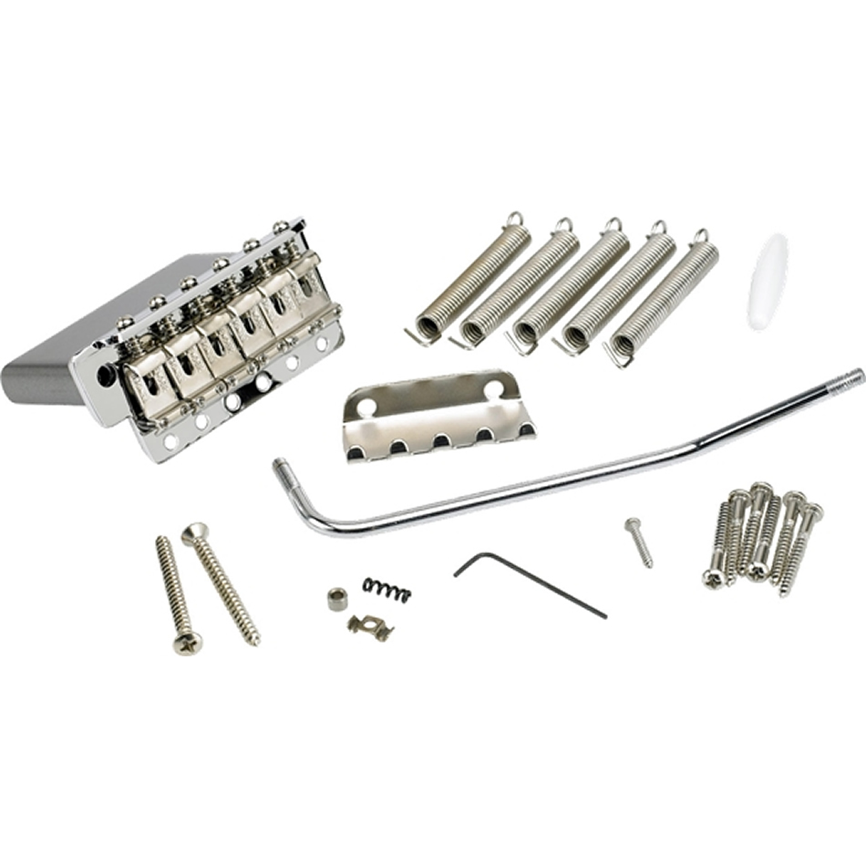
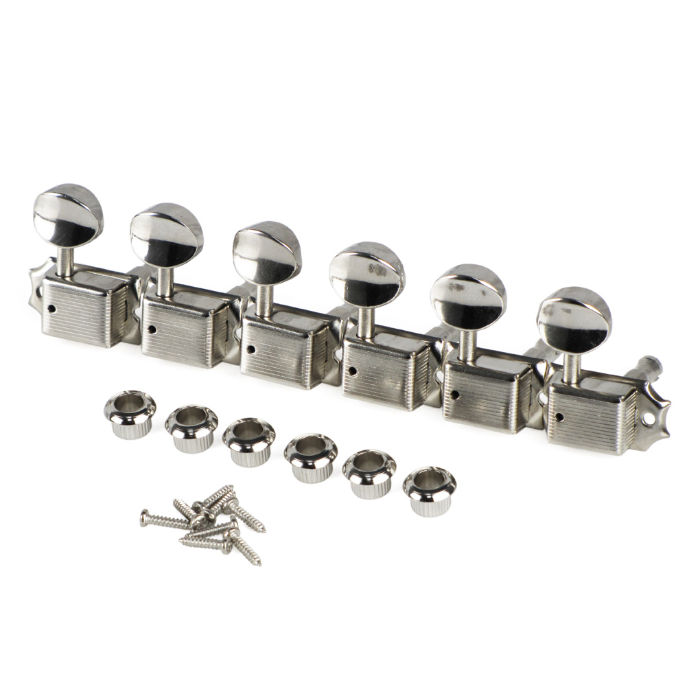
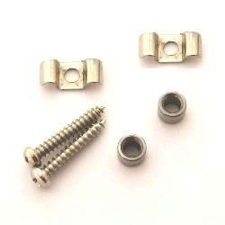
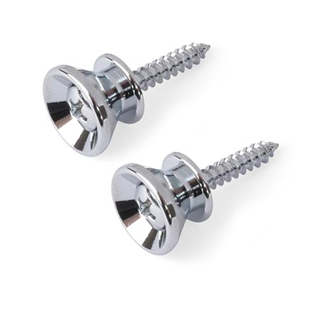
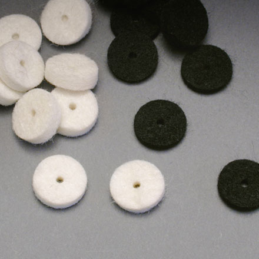

Well known suppliers
These are some of the suppliers I've had the pleasure to deal with:
Other Suppliers
Youtube DYI guitar builds
the Strat partcaster is the most versatile guitar
background
The Strat is probably the most recognizable guitar in the world. It is virtually unchanged since the 1950's. One of the things Leo Fender and his team did right, was to ask musicians for their opinions about how to make an electric guitar more comfortable. Leo Fender basically gave to musicians what they exactly wanted. The pickguard holds the key to the Strat's versatility. Just by changing the pickguard, you can insall virtually all the pickups being sold today.
instructions
In this section I will explain how I assemble guitars and I will also provide resurces to better explain the process.
Hardware
a bridge...
turners...
and a string retiner or two...
Strap button
Strap button felt
